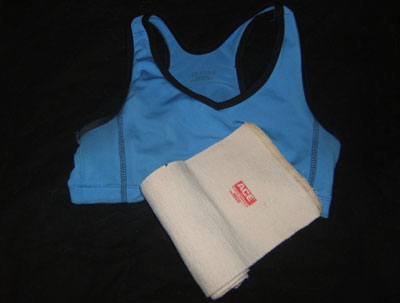
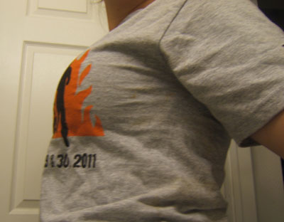
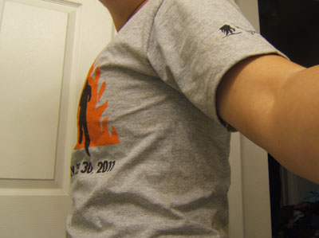

Chest Binding is essential for females who wish to cosplay a male character, known as "crossplay." This is one technique that I have personally used and find to be
the most comfortable and simple.
Materials
Well Fitted Sports Bra
Ace Bandage Wrap (Wide)

Instructions
First find a comfortable, snug sports bra. A good sports bra should flatten the breasts out and keep them from jiggling around too much.
Secondly, and you may need someone to help you with this, begin wrapping the ace bandages around the sports bra. The wide wrap will distribute the bulk of the breasts more evenly than a thinner bandage, and keep the layers from slipping around.
You will have to play with the tightness of the wrap and the exact placement in order to best hide your breasts, so be sure to practice this technique before the day of the costume debut.
When you have it the way you want it, use the fasteners or safety pins to keep the ends of the bandages in place.
Finally, put your shirt on over the wrappings. Hopefully your two lovely lumps have been reduced to nicely defined pectorals!
Questions/Answers
Wait, why do I need the sports bra?
So that if you have to take off the bandages or re-wrap for any reason, you can do it without flashing your goodies to everyone in the bathroom or your hotel room. :)
How long can I wear it like this?
All day if you want. But if it starts to hurt, UNWRAP YOUR BOOBIES!
Ow, my chest hurts.
UNWRAP YOUR BOOBIES! You can try to rewrap the bandages a little more loosely, or just take a break from the costume for a few hours.
Um, I'm having trouble breathing.
UNWRAP YOUR BOOBIES FOOL! You can try to rewrap the bandages a little more loosely, or just take a break from the costume for a few hours.
Can I use duct tape instead of bandages?
I reccomend AGAINST using duct tape instead of bandages, because duct tape doesn't have any stretch to it and therefore makes it harder for you to breath when it's wrapped around your chest. Plus it hurts like hell to get off. You seriously
do not want to be ripping skin off of your boobies.
Before and After

